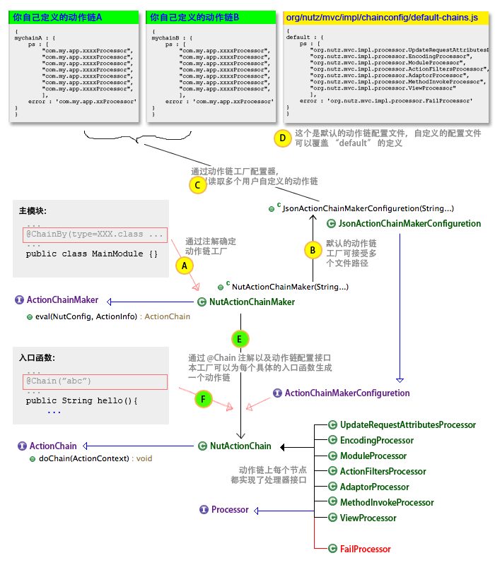

在新的版本中(1.b.36)之后的版本，Nutz.Mvc 统一采用动作链机制来处理每一个 HTTP 请求。我们认为:
因此它能让你的HTTP映射处理具备更大的灵活性。
下面是一张稍微有点复杂的图，根据这张图，我们来详细的解释一下这个机制，在了解了它之后，我相信你掌握更多的复用你代码的手段，从而更合理处理你的 URL 映射关系:

这张图稍微有点复杂，你可能看起来稍微要皱一下眉头。本文的后面几节会详细为你解释，但是你首先要记住:
整个 Nutz.Mvc 的应用，必须有且只能有一个动作链工厂。在主模块上，你可以声明你自己的动作链工厂（通过 @ChainBy 注解）。当然，如果你没有声明这个注解，Nutz.Mvc 会采用默认的动作链工厂实现类(org.nutz.mvc.impl.NutActionChainMaker)
如果你需要定制动作链工厂，你可以通过类似下面的形式，声明自己特殊配置的动作链工厂：
@ChainBy(args={"配置文件A路径", "配置文件B路径"})
你也可以采用自己的动作链工厂实现类
@ChainBy(type=MyChainMaker.class, args={...})
如果你的动作链工厂需要更复杂的配置，你可以交给 Ioc 容器来管理
@ChainBy(type=MyChainMaker.class, args={"ioc:myChianMaker"})
这样，你就可以在 Ioc 容器里，声明一个 "myChainMaker" 对象，来对其做任何你想要的配置。当然，首先你需要在主函数里声明了 Ioc 容器（请参看同 Ioc 容器一起工作一文）
如果你采用的是 Nutz.Mvc 的默认动作链工厂，它允许你在构造函数中声明动作链的配置文件。你可以增加任意多的动作链配置文件，在一个文件中，你可以声明任意多的动作链。
它有一个默认的配置文件，声明了一个名字为 "default" 的动作链。你的入口函数如果没有声明@Chain 注解的话，就是使用这个动作链。你可以通过自己的配置文件覆盖它。
它的构造函数定义为：
public NutActionChainMaker(String...args) {
...
接受变参数数组，每个参数，都是你配置文件的路径，可以是类路径，也可以是绝对路径，当然你也可以写成:
@ChainBy(args={"${app.root}/WEB-INF/chain/mychain.js"})
其中 ${app.root} 会被 Nutz.Mvc 替换成你的应用在服务器上的根目录。
每个配置文件你可以配置多个动作链，每个动作链需要一个名字，以便在入口函数通过 @Chain注解来引用，下面让我们来看看默认动作链配置文件的内容：
{
default : {
ps : [
"org.nutz.mvc.impl.processor.UpdateRequestAttributesProcessor",
"org.nutz.mvc.impl.processor.EncodingProcessor",
"org.nutz.mvc.impl.processor.ModuleProcessor",
"org.nutz.mvc.impl.processor.ActionFiltersProcessor",
"org.nutz.mvc.impl.processor.AdaptorProcessor",
"org.nutz.mvc.impl.processor.MethodInvokeProcessor",
"org.nutz.mvc.impl.processor.ViewProcessor"
],
error : 'org.nutz.mvc.impl.processor.FailProcessor'
}
}
动作链的配置文件采用了 JSON 格式。在上面的文件内只有一个动作链，名字为 "default"。通过例子你可以很容易看出，一个动作链需要两方面的信息：
默认的配置文件优先级最低，它随着 nutz.jar 一起发布，所以它没打算让你直接修改。你可以通过自己的配置文件覆盖其唯一的动作链 "default"
就像前面提到的，在每个入口函数里，你可以通过注解 @Chain 来指定你的这个函数将采用哪个动作链。如果你没有指定，Nutz.Mvc 认为你是希望用 @Chain("default")} 来处理这个入口函数。
需要说明的是，考虑到效率，在 Nutz.Mvc 加载时，它就会为每个入口函数创建 URL 映射关系。即把一个 URL 映射到一个动作链实例上。所以动作链的实例，是在加载时就被创建了。所以如果你自己实现了动作链工厂，请保证工厂生成的每个动作链是线程安全的。
如果你读完了上述小节，本节光看标题就足够了。
但是，我唠叨成性，这里再举个小例子：
@At("/a")
@Chain("abc")
public void funcA(){}
@At("/b")
@Chain("abc")
public void funcB(){}
@At("/c")
public void funcC(){}
@At("/d")
public void funcD(){}
在上面的例子中，四个入口函数，其中：
原因不解释。